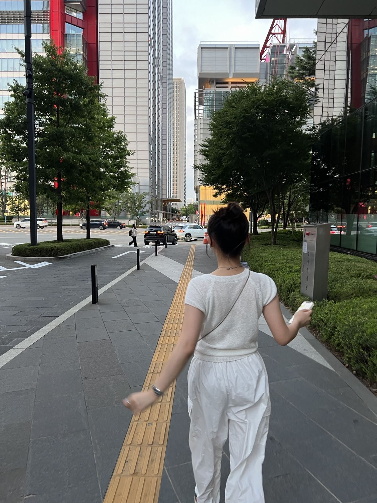
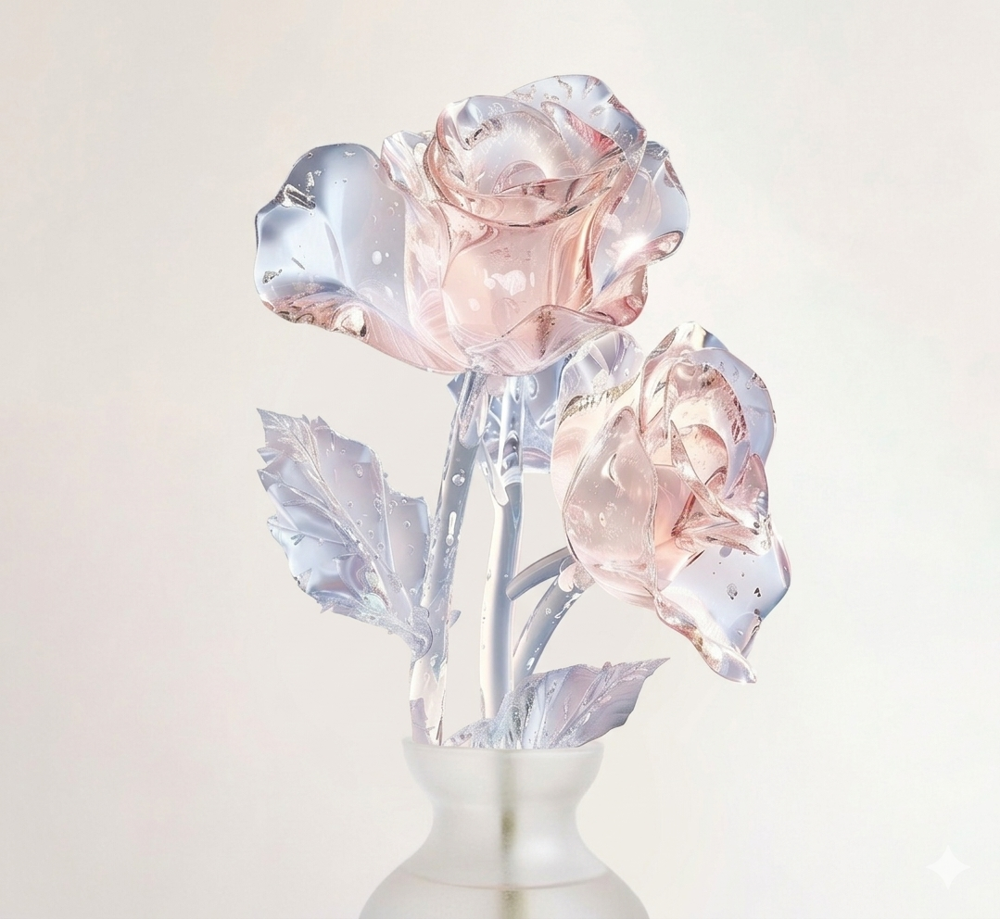
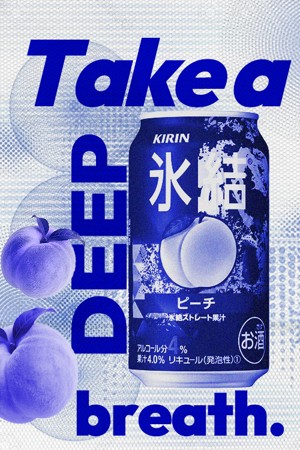
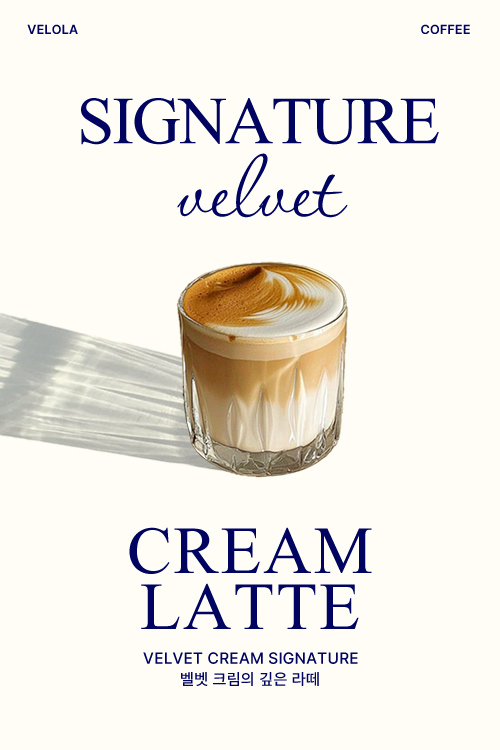
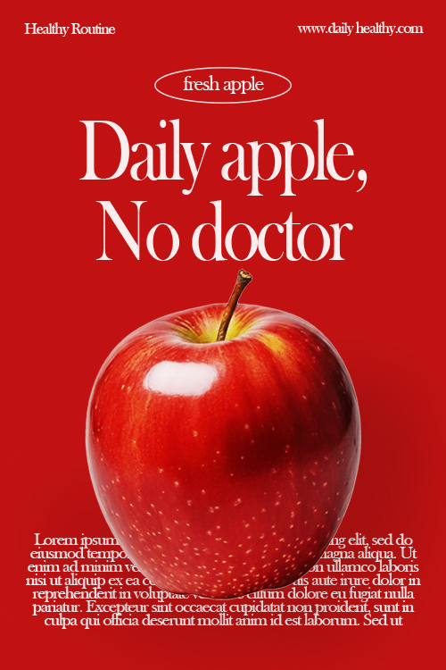
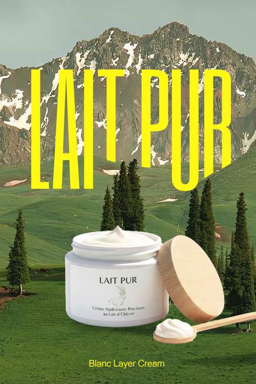
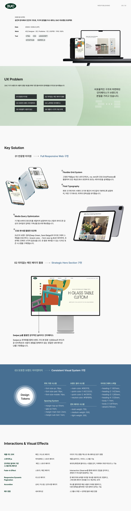
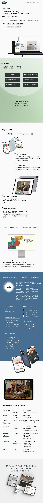

Foundation & Standards
보이지 않는 곳의 견고함이 웹의 본질을 결정한다고 생각합니다.
화려한 시각적 효과도 결국 탄탄한 설계 위에서만 빛을 발합니다. 저는 화면의 겉모습을 복제하는 것에 그치지 않고,
웹 표준을 준수하는 시맨틱 마크업을 통해 정보의 위계가 명확하고 접근성이 보장된 '건강한 웹'을 구축합니다.


Core Philosophy
기본의 가치를 코드로 증명하는 저만의 고집입니다.
-
Semantic Markup
단순히 div로 감싸는 것이 아니라, 검색 엔진과 스크린 리더가 콘텐츠를 정확히 해석할 수 있도록 적재적소에 태그를 사용합니다.
-
Responsive & Flexible
다양한 디바이스 환경에 대응하는 반응형 웹을 구현합니다. CSS Grid와 Flexbox를 능숙하게 활용하여, 해상도가 변해도 레이아웃이 무너지지 않는 견고한 UI를 설계합니다.
-
Clean & Logic
중복을 최소화하고 재사용이 용이한 CSS 구조를 지향합니다. 유지보수가 쉬운 코드가 곧 팀 전체의 비용을 줄이는 길임을 알기에, 네이밍 컨벤션과 코드의 가독성을 엄격하게 지킵니다.
Collaboration
팀의 생산성을 높이는 유연한 소통과 기록의 힘을 믿습니다.
-
Documentation
누구나 이해할 수 있는 주석과 구조화된 폴더링을 통해 동료 개발자와의 협업 효율을 높입니다.
-
Git Workflow
Main, Develop, Feature 등 명확한 브랜치 전략을 이해하고 있으며, 커밋 메시지 하나에도 작업의 의도를 담아 투명하게 공유합니다.
-
Problem Solving
새로운 기술을 무작정 도입하기보다, 현재 프로젝트에 가장 적합하고 안정적인 기술인지 기초적인 원리부터 파악하고 적용합니다.
Certifications
취득 자격증
- 2026.01
- GTQi 그래픽 기술자격 일러스트 1급
- 한국생산성본부KPC
- 2025.10
- GTQ 그래픽 기술자격 포토샵 1급
- 한국생산성본부KPC
Expertise
기획부터 디자인, 퍼블리싱에 이르기까지 프로젝트의 전 과정을 아우르는 기술을 기술 스택을 정리해보앗습니다. 각 언어나 프로그램의 특성을 이해하고 최적의 결과물을 만들기 위해 활용할 수 있습니다.
-
HTML5
웹 표준과 SEO를 준수하는 시맨틱 마크업으로 정보의 구조화와 견고한 뼈대를 구축합니다.
-
CSS3
반응형 레이아웃(Flex/Grid)과 섬세한 애니메이션을 활용해 기기에 최적화된 화면을 구현합니다.
-
JavaScript
동적인 인터랙션과 효율적인 DOM 조작을 통해 사용자 경험을 향상시키는 스크립트를 작성합니다.
-
Figma
컴포넌트 기반의 UI 디자인과 프로토타이핑을 통해 효율적인 사용자 인터페이스를 설계합니다.
-
Git
프로젝트의 변경 사항을 체계적으로 기록하고 안정적인 코드 히스토리 관리를 통해 작업의 효율성을 높이고, 이전 상태로의 신속한 복구 및 유지보수 환경을 구축합니다.
-
GitHub
원격 저장소를 활용한 협업 프로세스에 익숙하며, 팀 프로젝트의 코드를 공유하고 관리합니다. 깔끔한 커밋 컨벤션을 지향하며, Git 커뮤니티를 통해 프로젝트의 가시성을 확보하고 효율적인 워크플로우를 유지합니다.
-
Photoshop
웹 최적화 그래픽 에셋 제작 및 정교한 이미지 리터칭으로 브랜드의 시각적 완성도를 높입니다.
-
Illustrator
웹 최적화 그래픽 에셋 제작 및 정교한 이미지 리터칭으로 브랜드의 시각적 완성도를 높입니다.
-
Notion
웹 최적화 그래픽 에셋 제작 및 정교한 이미지 리터칭으로 브랜드의 시각적 완성도를 높입니다.
Popup Designs
{ Point of Focus }
가로사이즈 500px로 짧은 순간 사용자의 시선을 낚아채는 매력적인 디자인을 제작해보았습니다.
-

KIRIN
팝아트적인 블루 톤과 과감한 수직 타이포그래피를 사용하여 청량함과 역동적인 브랜드 이미지를 강조했습니다.
하프톤 패턴 배경과 과일 소스를 레이어드해 시각적인 재미와 함께 트렌디한 스트릿 감성을 담았습니다.
-

VELOLA
차분한 아이보리 톤과 깊은 네이비 컬러를 매치해 프리미엄 카페의 고급스럽고 정갈한 이미지를 연출했습니다
제품의 그림자를 살린 배치와 필기체 포인트가 조화를 이루어 감성적인 무드가 돋보이는 디자인입니다.
-

Daily Apple
강렬한 레드 배경과 대비되는 화이트 타이포그래피로 '하루 한 알의 사과'라는 건강한 메시지를 직관적으로 전달합니다.
클래식한 세리프 서체와 하단의 텍스트 배치를 통해 마치 잡지 광고 같은 세련된 레이아웃을 완성했습니다.
-

LAIT PUR
웅장한 자연경관 배경 위에 산뜻한 옐로우 타이포를 얹어, 자연 유래 성분의 순수함과 생명력을 표현했습니다.
광활한 풍경과 대비되는 제품의 클로즈업 배치를 통해 브랜드가 지향하는 깨끗하고 건강한 가치를 전달합니다
Poster Designs
{ Essence of the Message }
시선을 사로잡는 디자인 너머에 있는 메시지의 본질에 집중하여, 기억에 남는 시각적 경험을 디자인 해보았습니다.
Detail Designs
{ Product Detail Page }
가상의 상품에 대한 상세페이지를 AI어시스턴스와 디자인 툴 포토샵 일러스트레이터를 사용하여 디자인해보았습니다.
Responsive Web Works
{ Modern & Minimal }
실제 서비스 환경을 고려하여 제작된 반응형 프로젝트들입니다.
그리드 시스템과 상대단위를 활용하여 어떤 브라우저에서도 왜곡 없는 UI를 경험 하실 수 있도록 디자인하였습니다.
Break Point
-

mobile
768px
-

tab - pad
1024px
-

desktop
1920px
1Project
2UC Reblending Project
기존 웹사이트의 문제점 분석을 통한 UI/UX 전면 리뉴얼 프로젝트
단순한 정보 전달을 넘어, 사용자의 움직임에 반응하는 감각적인 인터랙티브 애니메이션을 설계했습니다.
스크롤에 따라 유기적으로 반응하는 콘텐츠 노출 방식은 사용자에게 시각적 즐거움을 선사하며,
브랜드 경험에 더욱 깊이 참여하게 만드는 몰입형 환경을 구축합니다.



Growing to Perfection.
깊은 곳에서 다진 단단한 뿌리로 탁월함을 피워내는, 웹 퍼블리셔 장윤서입니다.
치열한 생명력은 결코 헛되지 않기에, 노력을 넘어 실력으로 가치를 입증하겠습니다.
가장 깊은 곳에서 다진 단단한 뿌리로, 흔들림 없는 완성을 피워내겠습니다.